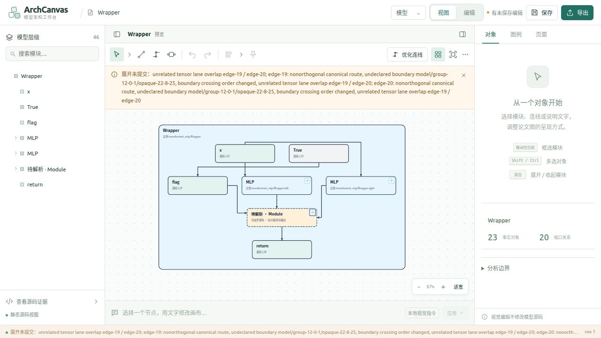
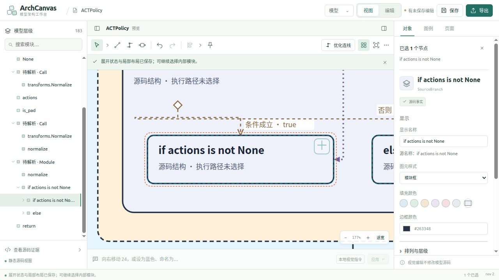
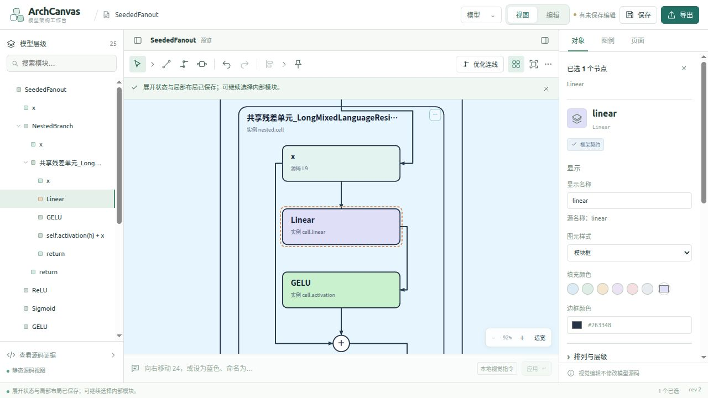
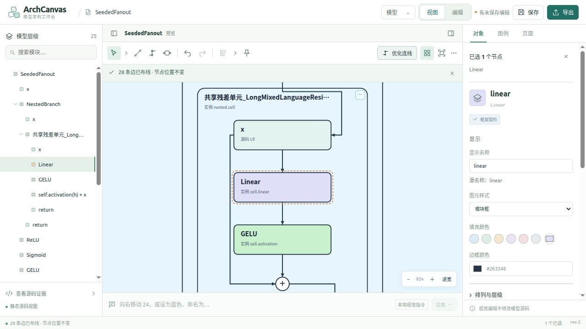
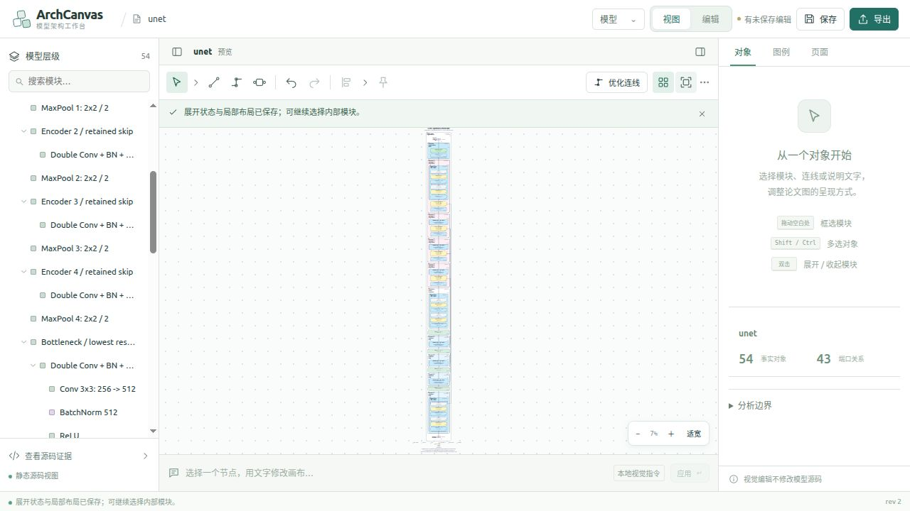
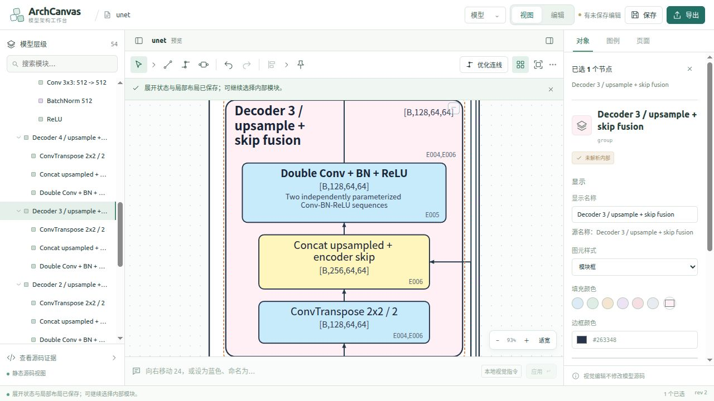
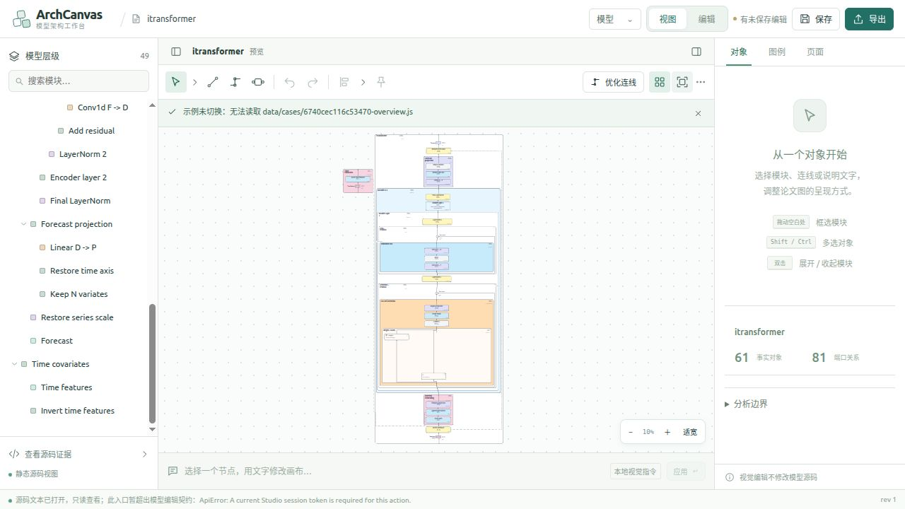
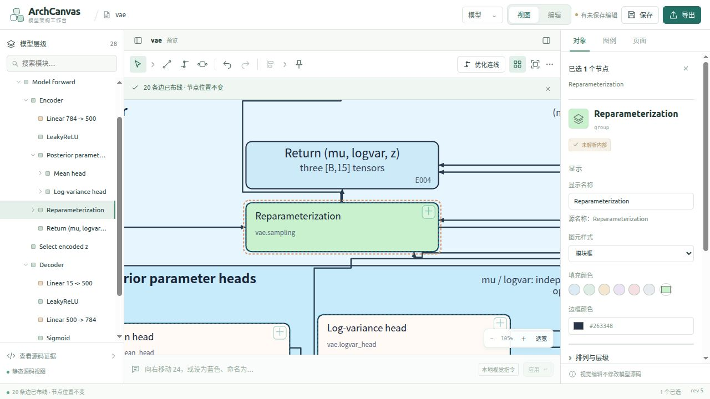
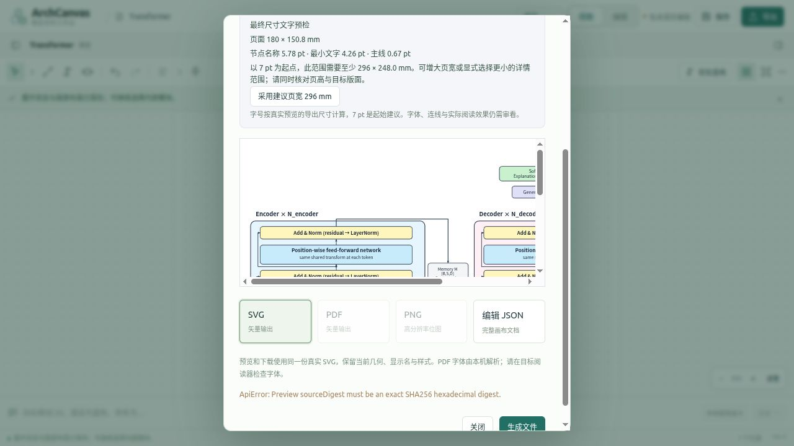
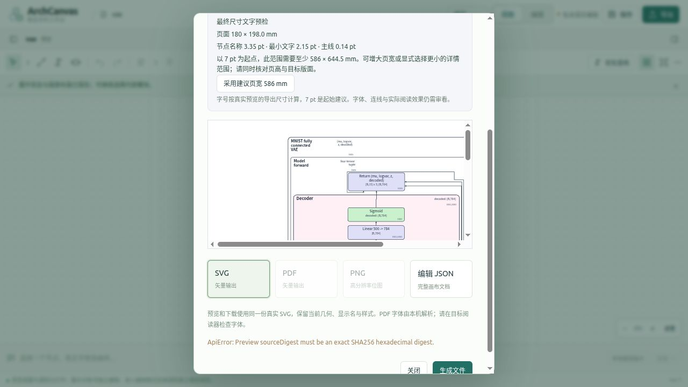

视图箭头与自动布局：真实截图索引
2026-10-17，1280×720，未修改截图中的图形。点击图片打开原图。图30为点击产品已有按钮后的状态，不代表本轮代码修复；图22和图37不用于所请求案例/小视口覆盖。完整结论见 报告。

VA-01 展开被拒绝 — 32-transformed-branch-expand-rejected.png

VA-02 条件虚线折返 — 15-act-original-if-detail.png

VA-03 展开后的 U 形线路 — 29-seeded-unary-detour-detail.png

VA-03 点击现有优化按钮后（不是本轮代码修复） — 30-seeded-unary-after-apply.png

VA-04 U-Net 总览 — 20-unet-all-expanded-fit.png

VA-04 U-Net 局部 — 21-unet-skip-detail.png

VA-04 iTransformer 总览 — 24-itransformer-mixed-fit.png

VAE 局部待核实拥挤 — 07-vae-route-detail-105.png

VA-05 Transformer 导出失败 — 40-transformer-export-rejected.png

VA-05 VAE 导出失败 — 41-vae-export-rejected.png